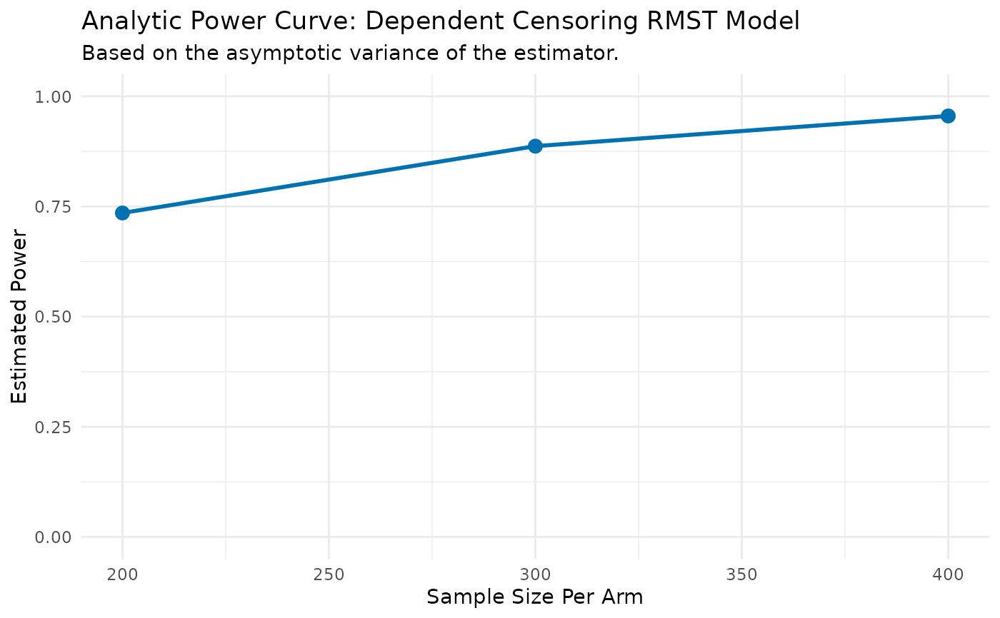

Analyze Power for RMST Model with Dependent Censoring (Analytic)
DC.power.analytical.RdPerforms power analysis for an RMST model with multiple censoring causes using a direct formula-based method.
Usage
DC.power.analytical(
pilot_data,
time_var,
status_var,
arm_var,
dep_cens_status_var,
sample_sizes,
linear_terms = NULL,
L,
alpha = 0.05
)Arguments
- pilot_data
A
data.framecontaining pilot study data.- time_var
A character string for the time-to-event variable.
- status_var
A character string for the primary event status (1=event, 0=otherwise).
- arm_var
A character string for the treatment arm variable (1=treatment, 0=control).
- dep_cens_status_var
A character string for the dependent censoring status (1=dependent event, 0=otherwise).
- sample_sizes
A numeric vector of sample sizes per arm to calculate power for.
- linear_terms
An optional character vector of other covariate names.
- L
The numeric value for the RMST truncation time.
- alpha
The significance level (Type I error rate).
Value
A list containing:
- results_data
A
data.framewith sample sizes and corresponding powers.- results_plot
A
ggplotobject visualizing the power curve.
Details
This function calculates power based on a linear model for RMST in the presence of both independent and dependent censoring (or competing risks). The method uses cause-specific IPCW to account for the censoring events.
Specifically, it fits a separate Cox proportional hazards model for each censoring
cause to estimate the cause-specific hazards. The final IPCW weight for each
subject is calculated by combining the cumulative hazards from all censoring causes:
$$W_i = \exp(\sum_{k=1}^{K} \hat{\Lambda}_{k}(Y_i))$$
where \(\hat{\Lambda}_{k}\) is the estimated cumulative hazard for censoring cause k.
The power is then derived from the asymptotic sandwich variance of the treatment effect in the resulting weighted linear model. This implementation uses a robust variance estimator that provides a good approximation but does not account for the variability from estimating the IPCW weights themselves.
Examples
# Generate sample pilot data
set.seed(123)
n_pilot <- 150
pilot_df <- data.frame(
time = rexp(n_pilot, rate = 0.1),
arm = rep(0:1, each = n_pilot / 2),
age = rnorm(n_pilot, mean = 60, sd = 10)
)
# Introduce a treatment effect
pilot_df$time[pilot_df$arm == 1] <- pilot_df$time[pilot_df$arm == 1] * 1.2
# Create competing event indicators
# Assume 70% primary event, 15% dependent censoring, 15% independent censoring
event_type <- sample(0:2, n_pilot, replace = TRUE, prob = c(0.7, 0.15, 0.15))
pilot_df$status <- ifelse(event_type == 0, 1, 0)
pilot_df$dep_cens_status <- ifelse(event_type == 1, 1, 0)
pilot_df$time[event_type != 0] <- pilot_df$time[event_type != 0] * 0.8
# Run the power analysis
dc_power_results <- DC.power.analytical(
pilot_data = pilot_df,
time_var = "time",
status_var = "status",
arm_var = "arm",
dep_cens_status_var = "dep_cens_status",
sample_sizes = c(200, 300, 400),
linear_terms = "age",
L = 20,
alpha = 0.05
)
#> --- Estimating parameters from pilot data... ---
#> Model: Y_rmst ~ arm + age
#> --- Calculating asymptotic variance... ---
#> --- Calculating power for specified sample sizes... ---
print(dc_power_results$results_data)
#> N_per_Arm Power
#> 1 200 0.7353163
#> 2 300 0.8870182
#> 3 400 0.9555608
print(dc_power_results$results_plot)
